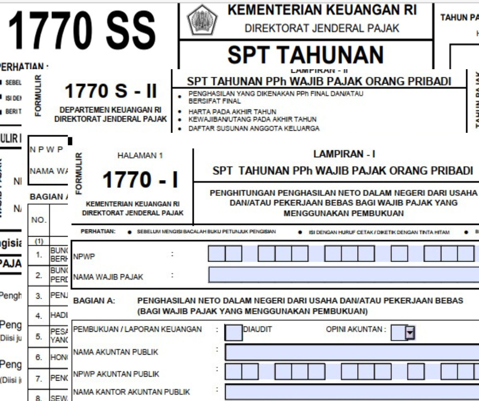
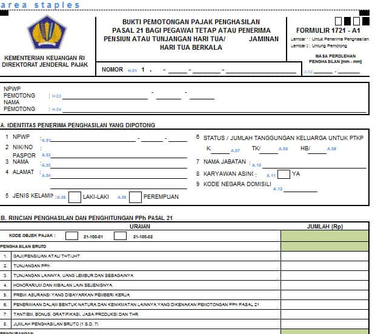
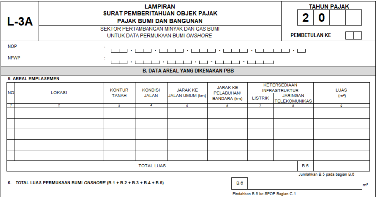
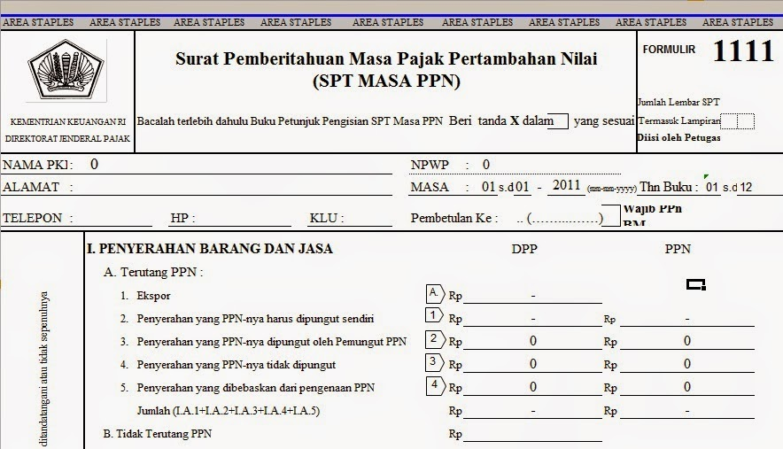

Pajak penghasilan orang pribadi

Pajak Penghasilan Orang Pribadi atau PPh Orang Pribadi (PPh OP) adalah pajak yang
dikenakan terhadap subjek pajak Orang Pribadi (OP). atas penghasilan yang diterima
atau diperoleh dalam Tahun Pajak maupun bagian Tahun Pajak.
Orang Pribadi adalah subjek pajak penghasilan yang mencakup orang pribadi yang
bertempat tinggal di Indonesia maupun di luar Indonesia.
Form Pelaporan PPh-OP Terdiri dari
-
Form 1770
-
Form 1770S
-
Form 1770SS
Form 1770 digunakan ketika seseorang WP bekerja di 2 perusahaan, memiliki usaha
atau sebagai pekerja bebas.
Form 1770S digunakan ketika seseorang WP bekerja di satu perusahaan
Form 1770SS digunakan untuk melapor apabila WP tidak sedang bekerja
Pajak Penghasilan Potong Pungut

Pajak Penghasilan Potong Pungut atau PPh Pot-Put adalah pajak yang diperoleh melalui skema pemotongan atau pemungutan. Pemotongan adalah kegiatan memotong sebesar pajak yang terutang dari keseluruhan pembayaran yang dilakukan. Pemotongan dilakukan oleh pemberi penghasilan. Adapun makna pemotongan yaitu jumlah yang diterima oleh penerima penghasilan berkurang (lebih kecil dari pembayaran yang dilakukan oleh pemberi penghasilan atas Dasar Pengenaan Pajak). Sedangkan pemungutan adalah kegiatan memungut sejumlah pajak yang terutang atas suatu transaksi. Secara umum, pemungutan dilakukan oleh penerima penghasilan, namun pada kondisi tertentu dapat juga dipungut oleh pemberi penghasilan. Makna pemungutan sendiri adalah menambah jumlah tagihan atau jumlah yang seharusnya diterima atas Dasar Pengenaan Pajak.
yang termasuk dalam kategori PPh Potput adalah:
-
PPh pasal 21 bagi penerima upah
-
PPh pasal 22 untuk barang mewah
-
PPh pasal 23 untuk Deviden bunga dan royalti
-
PPh Pasal 4 ayat 2 untuk PPh Final
-
PPh pasal 26 untuk penerimaan dari luar negri
Sama halnya dengan sengketa Pajak Penghasilan (PPh) Badan dan PPN, sengketa atas PPh Pemotongan dan Pemungutan (PPh Potput) juga dapat diajukan banding di pengadilan pajak. Banding pajak dapat dilakukan ketika Wajib Pajak atau penanggung pajak tidak setuju terhadap hasil keputusan keberatan yang ditetapkan Direktorat Jenderal Pajak (DJP) dalam Surat Keputusan Keberatan.
Pajak Bumi dan Bangunan

Pajak Bumi dan Bangunan (PBB) merupakan sebuah biaya yang harus disetorkan atas keberadaan tanah dan bangunan yang memberikan keuntungan dan kedudukan sosial ekonomi bagi seseorang ataupun badan. Karena Pajak Bumi dan Bangunan (PBB) bersifat kebendaan, maka besaran tarifnya ditentukan dari keadaan objek bumi atau bangunan yang ada.
Pajak Bumi dan Bangunan (PBB) pada dasarnya diatur dalam beberapa Undang-Undang di Indonesia, yaitu:
- Undang-Undang (UU) No.12 Tahun 1994 Tentang Perubahan atas Undang-Undang (UU) No. 12 Tahun 1985 terkait Pajak Bumi dan Bangunan (PBB) yang mengatur semua tentang pungutan atas Pajak Bumi dan Bangunan (PBB)
- Undang-Undang (UU) No. 28 Tahun 2009 Tentang Pajak dan Retribusi Daerah yang menjelaskan:
Bahwa pemerintah kabupaten atau pemerintah kota memiliki wewenang dalam melakukan pemungutan atas Pajak Bumi dan Bangunan (PBB) di sektor pedesaan dan perkotaan (PBB-P2)
Bahwa pemerintah atau pusat memiliki wewenang terhadap sektor Pertambangan, Perhutanan, dan Perkebunan (PBB-P3)
Sebagai dasar pengenaan pungutan atas Pajak Bumi dan Bangunan (PBB) dapat disebut Nilai Jual Objek Pajak (NJOP) dan dihitung berdasarkan harga rata-rata atau harga pasar pada saat melakukan transaksi jual beli. Dasar pengenaan pungutan ini ditetapkan oleh Menteri Keuangan (Menkeu)
Pajak Pertambahan Nilai

Apa itu PPN? Pajak Pertambahan Nilai atau PPN adalah pungutan yang dibebankan atas transaksi jual-beli barang dan jasa yang dilakukan oleh wajib pajak pribadi atau wajib pajak badan yang telah menjadi Pengusaha Kena Pajak (PKP).
Jadi, yang berkewajiban memungut, menyetor dan melaporkan PPN adalah para Pedagang/Penjual. Namun, pihak yang berkewajiban membayar PPN adalah Konsumen Akhir.
PPN atau Pajak Pertambahan Nilai dikenakan dan disetorkan oleh pengusaha atau perusahaan yang telah dikukuhkan sebagai Pengusaha Kena Pajak (PKP).
Namun beban PPN tersebut ditanggung oleh konsumen akhir. Sejak 1 Juli 2016, PKP se-Indonesia wajib membuat faktur pajak elektronik atau e-Faktur untuk menghindari penerbitan faktur pajak fiktif untuk pengenaan PPN kepada lawan transaksinya